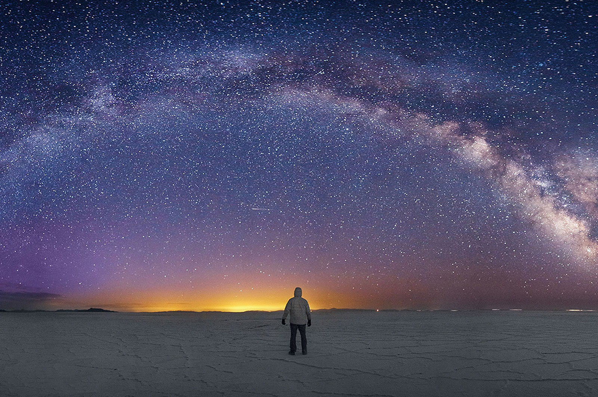

Train Cementery
The Uyuni salt flat are the star gazing center of the world, as the
lack of light pollution, clean air, wide night skies and breathtaking
surroundings allow it to be one of the best stargazing
locations in the world.
The extra fact of having the Salar de Uyuni reflecting the stars
back at you make it a surrounding experience as the sky reflects at
your feet. Best of all you do not need a telescope to see the stars.

One can see things such as the Milky Way, distant galaxies, the
Aurora Australis and even shooting stars. All that without needing
any technical assistance and photos look surreal. This is all possible
due to Uyuni being one of the few remaing places with little to no light
polution allowing the stars to be seen in crystal clarity.
It will for sure be a night to remember.